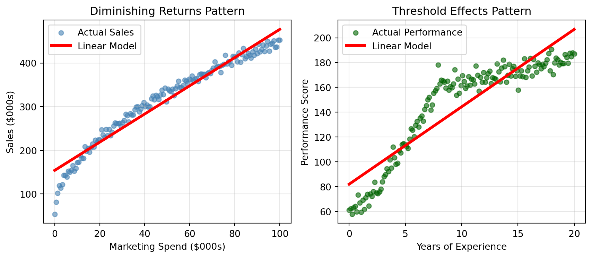
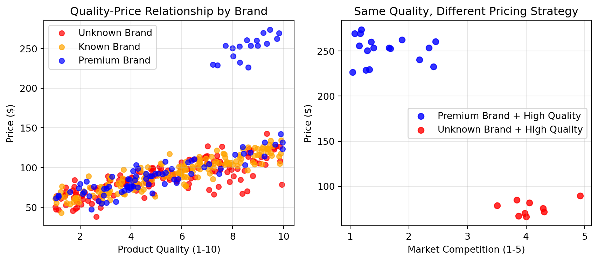
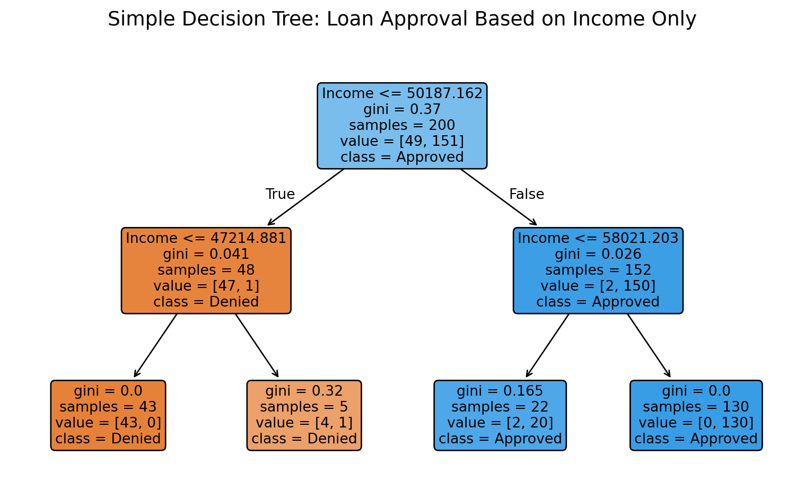
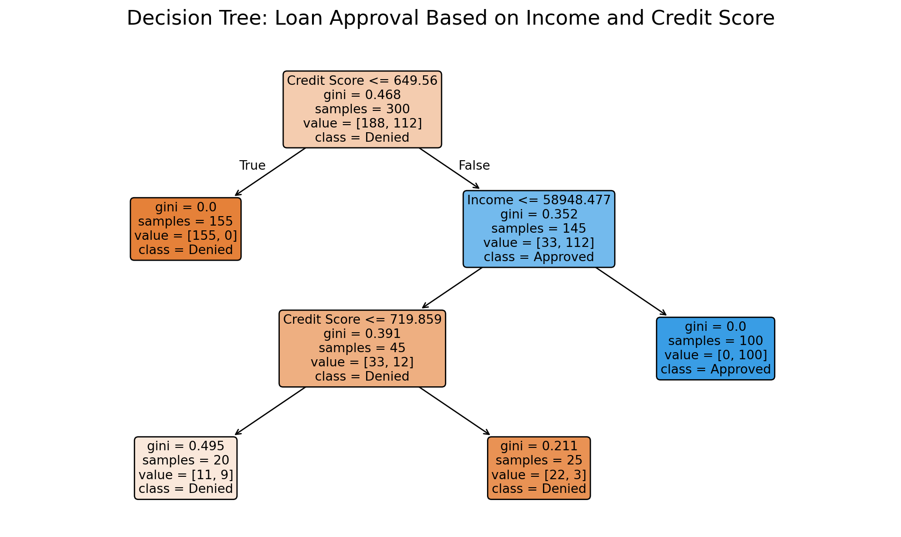
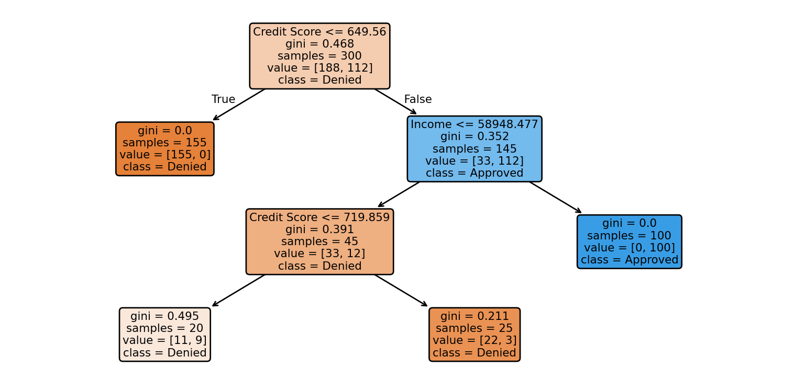
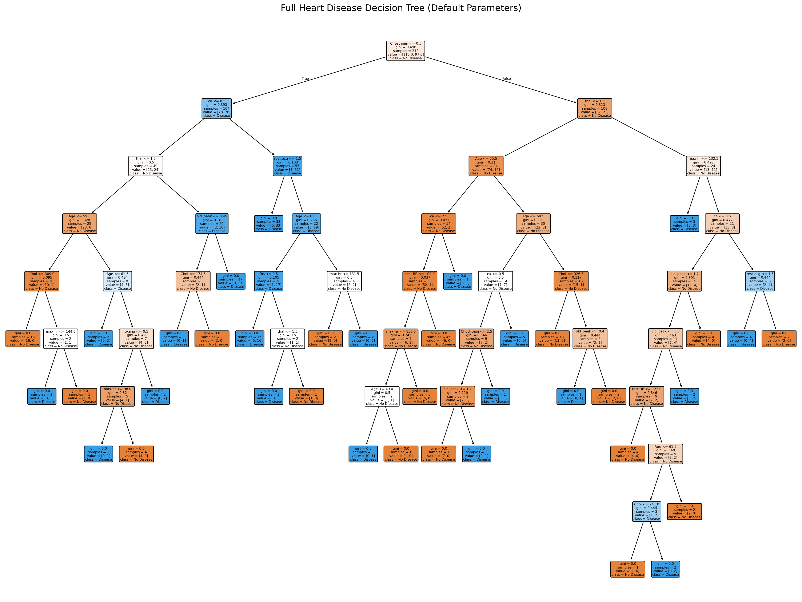
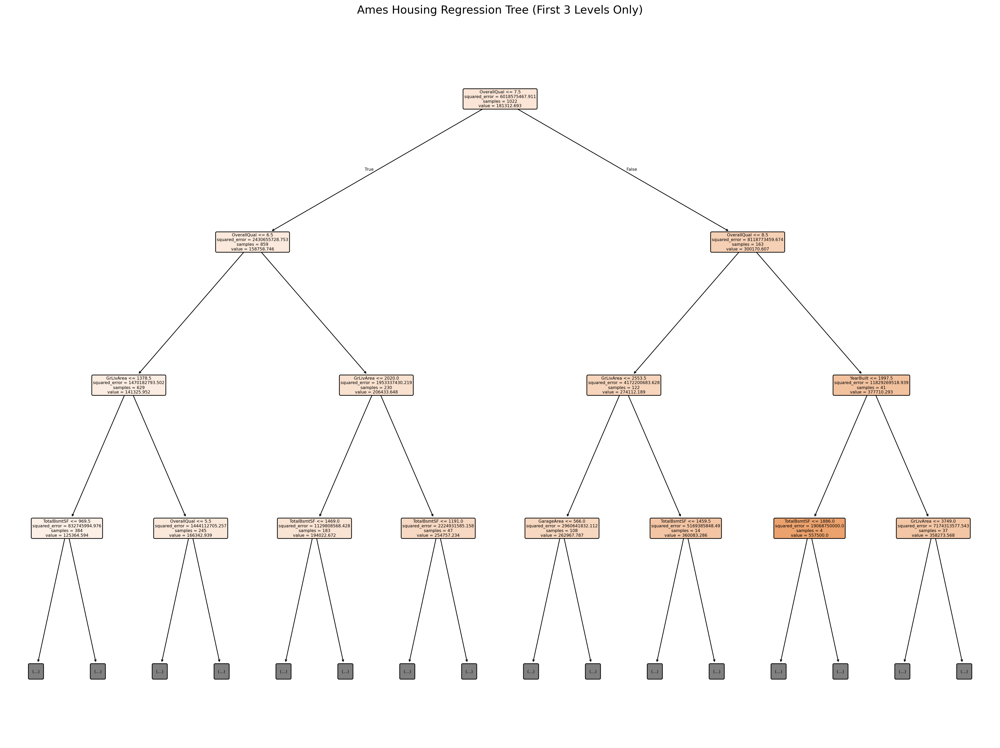

25Decision Trees: Foundations and Interpretability
After mastering linear and logistic regression, you might think these methods can handle any business problem. However, many real-world relationships don’t follow the straight-line assumptions that linear methods require. Consider these challenging business scenarios:
A customer’s spending doesn’t increase steadily with income—wealthy customers might become price-conscious while middle-income customers splurge on certain categories
Marketing response isn’t linear—ads might need to reach a minimum frequency before they work, then plateau at high levels
Risk doesn’t increase smoothly—loan defaults might jump suddenly at certain credit score thresholds
Complex interactions matter—“high income AND young age” behaves very differently than either factor alone
NoteExperiential Learning
Think about a decision you make regularly that involves multiple factors, but where you don’t apply the same “weight” to each factor in every situation. Maybe you choose restaurants differently when you’re with family versus friends, or you evaluate job candidates differently based on the specific role requirements.
Write down one such decision where your process changes based on context. How do your decision rules shift? Do you have explicit thresholds like “If it’s a family dinner AND price is above $50, then look for kid-friendly options”? By the end of this chapter, you’ll understand how decision trees can capture this type of context-dependent decision-making that linear models struggle with.
This chapter introduces decision trees, algorithms designed specifically to handle the limitations of linear methods. Unlike regression models that assume relationships are linear and consistent across all observations, decision trees automatically discover non-linear patterns, complex interactions, and context-dependent rules that mirror how humans actually make decisions.
By the end of this chapter, you will be able to:
Explain how decision trees make predictions through recursive splitting and yes/no questions
Understand the CART algorithm and how it uses Gini impurity (classification) and SSE (regression) to find optimal splits
Build both classification and regression trees using scikit-learn’s DecisionTreeClassifier and DecisionTreeRegressor
Control tree complexity and prevent overfitting using parameters like max_depth, min_samples_split, and min_samples_leaf
Recognize when decision trees are preferable to linear models based on data characteristics and business requirements
Apply decision trees to business problems requiring transparency and interpretability
Note📓 Follow Along in Colab!
As you read through this chapter, we encourage you to follow along using the companion notebook in Google Colab (or another editor of your choice). This interactive notebook lets you run all the code examples covered here—and experiment with your own ideas.
You’ve built solid foundations with linear and logistic regression, but these methods make strong assumptions that don’t always match business reality. Understanding these limitations helps you recognize when decision trees (and later, more advanced methods) become necessary.
Where Linear Methods Struggle
Understanding why linear methods fall short helps you recognize when more sophisticated approaches like decision trees become necessary. Let’s explore these limitations with concrete examples that demonstrate how real business relationships often violate linear assumptions.
1. Non-linear Relationships: Linear models assume that changes in predictors have consistent effects across their entire range. But real business relationships often involve complex curves, thresholds, and saturation points.
Show code for non-linear relationship examples
# Demonstrate non-linear relationships that linear models can't captureimport matplotlib.pyplot as pltimport numpy as npfrom sklearn.linear_model import LinearRegression# Set random seed for reproducibilitynp.random.seed(42)plt.figure(figsize=(9, 4))# Example 1: Diminishing Returns - Marketing Spend vs Salesplt.subplot(1, 2, 1)marketing_spend = np.linspace(0, 100, 150)# Sales show diminishing returns - big gains early, then plateausales =50+40* np.sqrt(marketing_spend) + np.random.normal(0, 8, len(marketing_spend))sales = np.clip(sales, 0, None)# Fit linear modellinear_model1 = LinearRegression()X_marketing = marketing_spend.reshape(-1, 1)linear_model1.fit(X_marketing, sales)linear_pred1 = linear_model1.predict(X_marketing)plt.scatter(marketing_spend, sales, alpha=0.6, color='steelblue', s=25, label='Actual Sales')plt.plot(marketing_spend, linear_pred1, color='red', linewidth=3, label='Linear Model')plt.xlabel('Marketing Spend ($000s)')plt.ylabel('Sales ($000s)')plt.title('Diminishing Returns Pattern')plt.legend()plt.grid(True, alpha=0.3)# Example 2: Threshold Effect - Experience vs Performanceplt.subplot(1, 2, 2)experience_years = np.linspace(0, 20, 150)# Performance jumps after certain experience levelsperformance = np.where( experience_years <2, 60+ experience_years *5, # Slow start np.where( experience_years <8, 70+ (experience_years -2) *15, # Rapid improvement160+ (experience_years -8) *2# Gradual improvement )) + np.random.normal(0, 5, len(experience_years))# Fit linear modellinear_model2 = LinearRegression()X_experience = experience_years.reshape(-1, 1)linear_model2.fit(X_experience, performance)linear_pred2 = linear_model2.predict(X_experience)plt.scatter(experience_years, performance, alpha=0.6, color='darkgreen', s=25, label='Actual Performance')plt.plot(experience_years, linear_pred2, color='red', linewidth=3, label='Linear Model')plt.xlabel('Years of Experience')plt.ylabel('Performance Score')plt.title('Threshold Effects Pattern')plt.legend()plt.grid(True, alpha=0.3)plt.tight_layout()plt.show()

These examples reveal critical business patterns that linear models consistently miss:
Diminishing returns (left plot): Marketing spend shows dramatic early gains that plateau over time, but linear models assume constant returns throughout
Threshold effects (right plot): Employee performance jumps occur at specific experience milestones—junior employees improve slowly, then accelerate rapidly between years 2-8, then plateau again
Non-linear optimization: Linear models would suggest unlimited marketing spend or that all experience years are equally valuable, leading to poor resource allocation decisions
2. Complex Interactions: Linear models require you to manually specify interactions (like creating age × income features). But in real business data, the most important interactions often involve multiple variables and aren’t obvious upfront.
Show code for complex interaction example
# Demonstrate complex interactions: Product pricing strategynp.random.seed(123)n_products =400# Generate product dataproduct_quality = np.random.uniform(1, 10, n_products)brand_reputation = np.random.choice([1, 2, 3], n_products, p=[0.4, 0.4, 0.2]) # 1=unknown, 2=known, 3=premiummarket_competition = np.random.uniform(1, 5, n_products) # 1=low competition, 5=high competition# Complex interaction: pricing strategy depends on quality AND brand AND competition# High quality + premium brand + low competition = premium pricing# High quality + unknown brand + high competition = competitive pricing# The effect of quality depends entirely on brand and competition contextpricing_multiplier = np.where( (product_quality >7) & (brand_reputation ==3) & (market_competition <2.5),2.5+ product_quality *0.3, # Premium pricing strategy np.where( (product_quality >7) & (brand_reputation ==1) & (market_competition >3.5),0.8+ product_quality *0.1, # Competitive pricing strategy1.0+ product_quality *0.15# Standard pricing ))# Calculate final prices with some noisebase_cost =50price = base_cost * pricing_multiplier + np.random.normal(0, 10, n_products)price = np.clip(price, 30, 300)# Create visualization showing the interactionplt.figure(figsize=(9, 4))# Plot 1: Quality vs Price by Brand (shows interaction)plt.subplot(1, 2, 1)colors = ['red', 'orange', 'blue']brand_names = ['Unknown', 'Known', 'Premium']for i, brand inenumerate([1, 2, 3]): mask = brand_reputation == brand plt.scatter(product_quality[mask], price[mask], alpha=0.7, color=colors[i], s=30, label=f'{brand_names[i]} Brand')plt.xlabel('Product Quality (1-10)')plt.ylabel('Price ($)')plt.title('Quality-Price Relationship by Brand')plt.legend()plt.grid(True, alpha=0.3)# Plot 2: Same quality, different contexts = different pricesplt.subplot(1, 2, 2)# Focus on high-quality products (quality > 7) to show interaction effecthigh_quality = product_quality >7premium_brand_low_comp = (brand_reputation ==3) & (market_competition <2.5) & high_qualityunknown_brand_high_comp = (brand_reputation ==1) & (market_competition >3.5) & high_qualityplt.scatter(market_competition[premium_brand_low_comp], price[premium_brand_low_comp], alpha=0.8, color='blue', s=40, label='Premium Brand + High Quality')plt.scatter(market_competition[unknown_brand_high_comp], price[unknown_brand_high_comp], alpha=0.8, color='red', s=40, label='Unknown Brand + High Quality')plt.xlabel('Market Competition (1-5)')plt.ylabel('Price ($)')plt.title('Same Quality, Different Pricing Strategy')plt.legend()plt.grid(True, alpha=0.3)plt.tight_layout()plt.show()

The pricing example reveals how business interactions work in practice. In the left plot, notice how the relationship between quality and price completely changes depending on brand reputation - premium brands can charge much more for the same quality level. The right plot shows an even more striking interaction: products with identical high quality end up with dramatically different prices depending on the competitive context and brand positioning.
This demonstrates why linear models often miss the mark in business contexts:
Context-dependent relationships: The value of “high quality” depends entirely on brand reputation and competitive environment
Segment-specific strategies: Premium brands follow completely different pricing rules than unknown brands
Multi-way interactions: Success requires understanding how quality AND brand AND competition work together, not just their individual effects and this is very difficult for linear models to capture.
3. Mixed Data Types: Linear models require extensive preprocessing for categorical variables, often losing important information in the process:
Dummy encoding explosion: A categorical variable with 20 categories becomes 19 binary columns with sparse data
Lost ordinal relationships: Converting “Low/Medium/High” to binary variables loses the natural ordering
Production brittleness: New categories in live data can break existing dummy encoding schemes
4. Rule Generation: Linear coefficients don’t easily translate to actionable business rules that stakeholders can understand and implement:
Mathematical abstractions: “Increase marketing coefficient by 0.003” isn’t as useful as “If customer age > 45 AND income > $75k, then offer premium products”
Stakeholder communication: Business leaders want clear decision criteria, not mathematical equations
Implementation challenges: Complex linear combinations are harder to operationalize than simple if-then rules
NoteWhy Linear Models Struggle in Business
Linear models make strong assumptions that rarely hold in real business environments: they assume relationships are straight lines, effects are consistent across all data ranges, and interactions must be manually specified. Business data typically exhibits non-linear patterns like diminishing returns, threshold effects, and complex multi-way interactions that change based on context.
Non-linear models like decision trees offer a more flexible approach by automatically discovering these complex patterns without requiring you to specify them upfront. Instead of forcing data into linear relationships, trees adapt to the natural structure of business data—making them particularly valuable when relationships are complex and stakeholder interpretability matters.
Where Decision Trees Excel
While linear methods struggle with the complexities we’ve just described, decision trees are designed specifically to handle these challenges. Think of decision trees as the business world’s natural problem-solving approach—breaking complex decisions into a series of simple yes/no questions. Here are the key advantages that make trees particularly powerful for business applications:
Automatic Threshold Detection: Trees find meaningful cut-points in your data without you having to specify them.
Natural Interaction Modeling: Trees automatically create different rules for different subgroups, capturing complex interactions.
Mixed Data Handling: Trees can conceptually handle numeric, categorical, and ordinal data (though sklearn requires encoding).
Business-Friendly Output: Trees generate interpretable “if-then” rules that translate directly into business processes.
No Distribution Assumptions: Trees don’t assume your data follows any particular statistical distribution.
Beyond these individual strengths, decision trees excel because they mirror how humans naturally make complex decisions in business contexts. When evaluating loan applications, hiring candidates, or diagnosing problems, we instinctively break down complex situations into a series of simpler questions. Decision trees formalize this intuitive approach, making them both powerful and understandable.
Consider how a seasoned sales manager evaluates leads: they might first ask “Is the company budget above $100K?” Then, depending on the answer, ask different follow-up questions. High-budget prospects get questions about decision timeline and authority, while lower-budget prospects get questions about growth potential and pain points. This context-dependent questioning is exactly how decision trees operate—automatically learning the most informative questions and when to ask them.
flowchart TD
A[Sales Lead] --> B{"Budget above 100K?"}
B -->|Yes| C{"Timeline under 6 months?"}
B -->|No| D{"High Growth Potential?"}
C -->|Yes| E{"Decision Maker Access?"}
C -->|No| F[Nurture Lead]
D -->|Yes| G{"Significant Pain Points?"}
D -->|No| H[Low Priority]
E -->|Yes| I[High Priority Prospect]
E -->|No| J[Identify Decision Maker]
G -->|Yes| K[Medium Priority Prospect]
G -->|No| L[Monitor for Changes]
style A fill:#e1f5fe
style I fill:#c8e6c9
style K fill:#fff3c4
style F fill:#ffcdd2
style H fill:#ffcdd2
style J fill:#fff3c4
style L fill:#ffcdd2
The combination of these advantages makes decision trees particularly valuable in business environments where both accuracy and interpretability matter. Unlike black-box algorithms that provide predictions without explanations, trees offer a clear audit trail from input features to final decisions.
NoteDecision Tree Advantages Summary
Flexibility: Automatically handle non-linear relationships, complex interactions, and mixed data types without manual specification
Interpretability: Generate clear if-then rules that stakeholders can understand, verify, and implement in business processes
Robustness: Work with imperfect data (missing values, outliers) and make no assumptions about underlying distributions
Business Alignment: Mirror natural human decision-making processes, making them intuitive for domain experts to evaluate and trust
25.2 How Decision Trees Think
Decision trees work by learning a series of yes/no questions that best separate the data into meaningful groups. Each question splits the data based on a single feature, creating a tree-like structure where each internal node represents a question, each branch represents an answer, and each leaf represents a final prediction.
The Decision-Making Process
Imagine you’re a loan officer deciding whether to approve credit applications. You might naturally think through questions like:
“Is the applicant’s income above $50,000?”
If yes: “Is their credit score above 700?”
If no: “Do they have a co-signer?”
flowchart TD
A[Loan Application] --> B{"Income above 50K?"}
B -->|Yes| C{"Credit Score above 700?"}
B -->|No| D{"Has Co-signer?"}
C -->|Yes| E[Approve Loan]
C -->|No| F[Review Additional Factors]
D -->|Yes| G[Consider Approval]
D -->|No| H[Deny Loan]
style A fill:#e1f5fe
style E fill:#c8e6c9
style G fill:#fff3c4
style F fill:#fff3c4
style H fill:#ffcdd2
This sequential questioning process is exactly how decision trees operate, but they learn the optimal questions and thresholds automatically from data.
Tree Anatomy: Nodes, Splits, and Leaves
Before we build our first tree, let’s understand the key components:
Root Node: The starting point where all data begins
Internal Nodes: Decision points that ask yes/no questions
Branches: Paths representing answers to questions
Leaf Nodes: Final destinations that provide predictions
Depth: How many questions deep the tree goes
flowchart TD
A["🏠 ROOT NODE<br/>All Data Starts Here"] --> B{"🔀 INTERNAL NODE<br/>Question 1"}
B -->|"📈 BRANCH<br/>(Yes)"| C{"🔀 INTERNAL NODE<br/>Question 2A"}
B -->|"📉 BRANCH<br/>(No)"| D{"🔀 INTERNAL NODE<br/>Question 2B"}
C -->|"📈 BRANCH<br/>(Yes)"| E["🎯 LEAF NODE<br/>Prediction A"]
C -->|"📉 BRANCH<br/>(No)"| F["🎯 LEAF NODE<br/>Prediction B"]
D -->|"📈 BRANCH<br/>(Yes)"| G["🎯 LEAF NODE<br/>Prediction C"]
D -->|"📉 BRANCH<br/>(No)"| H["🎯 LEAF NODE<br/>Prediction D"]
%% Depth indicators
I["📏 DEPTH = 3<br/>(3 levels of questions)"]
%% Styling
style A fill:#e3f2fd,stroke:#1976d2,stroke-width:3px
style B fill:#fff3e0,stroke:#f57c00,stroke-width:2px
style C fill:#fff3e0,stroke:#f57c00,stroke-width:2px
style D fill:#fff3e0,stroke:#f57c00,stroke-width:2px
style E fill:#e8f5e8,stroke:#388e3c,stroke-width:2px
style F fill:#e8f5e8,stroke:#388e3c,stroke-width:2px
style G fill:#e8f5e8,stroke:#388e3c,stroke-width:2px
style H fill:#e8f5e8,stroke:#388e3c,stroke-width:2px
style I fill:#f3e5f5,stroke:#7b1fa2,stroke-width:2px
Let’s See This in Action
To understand how decision trees work, let’s start simple and build up complexity. We’ll begin with a tree that uses just one variable, then expand to show how multiple variables work together.
Example 1: Single-Variable Decision Tree
Let’s start with the simplest possible case—predicting loan approval based solely on income. We’ll create a synthetic dataset that mimics realistic loan approval patterns, where higher incomes generally lead to higher approval rates, but with some natural variation to reflect real-world complexity:
Show code for simple one-variable example
# Create simple loan approval dataset with one variableimport pandas as pdimport numpy as npfrom sklearn.tree import DecisionTreeClassifierfrom sklearn import treeimport matplotlib.pyplot as plt# Set random seed for reproducibilitynp.random.seed(42)# Generate simple income datan_samples =200income = np.random.uniform(30000, 120000, n_samples)# Create simple approval logic based on income thresholds# Higher income = higher approval probability, but with some variationapproval_prob = np.where(income <50000, 0.2, np.where(income <80000, 0.7, 0.9))# Add some randomnessapproval_prob += np.random.normal(0, 0.1, n_samples)approved = (approval_prob >0.5).astype(int)# Create DataFramesimple_data = pd.DataFrame({'income': income,'approved': approved})print(f"Sample size: {len(simple_data)}")print(f"Overall approval rate: {simple_data['approved'].mean():.1%}")print("\nFirst few rows of our simulated loan data:")print(simple_data.head())# Build simple decision tree with one variableX_simple = simple_data[['income']]y_simple = simple_data['approved']# Create a very simple tree (max_depth=2) to see clear splitssimple_tree = DecisionTreeClassifier(max_depth=2, min_samples_split=20, random_state=42)simple_tree.fit(X_simple, y_simple)print(f"Single-variable tree accuracy: {simple_tree.score(X_simple, y_simple):.3f}")
Sample size: 200
Overall approval rate: 75.5%
First few rows of our simulated loan data:
income approved
0 63708.610696 1
1 115564.287577 1
2 95879.454763 1
3 83879.263578 1
4 44041.677640 0
Single-variable tree accuracy: 0.985
Show code for visualizing single-variable tree
# Visualize the simple treeplt.figure(figsize=(8, 5))tree.plot_tree( simple_tree, feature_names=['Income'], class_names=['Denied', 'Approved'], filled=True, rounded=True, fontsize=10)plt.title("Simple Decision Tree: Loan Approval Based on Income Only", fontsize=14, pad=20)plt.tight_layout()plt.show()

NoteReading Tree Node Information
Each box (node) in the tree diagram contains valuable information:
Splitting Condition (top line): The yes/no question being asked (e.g., “Income ≤ 50,187.5”)
gini: Impurity measure ranging from 0.0 to 0.5 (more on this below)
samples: Number of data points that reach this node
value: Count for each class as [denied_count, approved_count]
class: The predicted class for observations at this node (shown by the majority class)
Color: Node color indicates the dominant class - darker colors mean more pure (confident) predictions
Path Navigation: Follow the left branch when the condition is TRUE, right branch when FALSE.
Understanding How CART Trees Make Decisions
The tree you see above was built using the CART (Classification and Regression Trees) algorithm—the foundation of scikit-learn’s DecisionTreeClassifier. Understanding how CART chooses where to split helps you appreciate why trees are so powerful for business applications.
How CART Finds the Best Split:
Exhaustive Search: At each node, CART considers every possible split for every feature. For income, it tests thresholds like “income ≤ $45,000”, “income ≤ $46,000”, etc.
Purity Measurement: Each potential split is evaluated using Gini impurity, which measures how “mixed” the resulting groups are:
Gini = 0: Perfect purity (all approved or all denied)
Gini = 0.5: Maximum impurity (50/50 mix)
Best Split Selection: CART chooses the split that creates the largest reduction in impurity—effectively asking “Which question best separates our data into distinct groups?”
Recursive Splitting: The process repeats for each resulting branch until stopping criteria are met.
Why This Matters for Business: This systematic approach means trees automatically discover the income thresholds that matter most for loan decisions. In our example, the tree found that income around $50,187 is a critical decision point—not because we told it to look there, but because that’s where the data naturally splits between approvals and denials. Notice how the tree then makes additional splits at $47,215 (for lower incomes) and $58,021 (for higher incomes), creating distinct income bands with different approval patterns.
ImportantUnderstanding Gini Impurity
Gini impurity is CART’s way of measuring how “mixed up” or “messy” a group is in terms of the classes we’re trying to predict. Think of it as a messiness meter:
Perfect Organization (Gini = 0.0): All loans in the group have the same outcome—either all approved or all denied. This is what we want! A perfectly pure group means we can make confident predictions.
Maximum Mess (Gini = 0.5): The group is a 50/50 mix of approved and denied loans. This is the worst case—we’re essentially flipping a coin to make predictions.
In Between (Gini = 0.1 to 0.4): Most groups fall somewhere in the middle, with one outcome being more common than the other.
Why CART Loves Lower Gini: The algorithm always seeks splits that minimize Gini impurity because more organized groups lead to more confident, accurate predictions. When CART compares potential splits, it calculates: “If I split here, how much will the overall messiness decrease?” The split that creates the biggest reduction in messiness wins.
Business Translation: Lower Gini impurity means clearer business rules. A node with Gini = 0.1 represents a very reliable business segment, while Gini = 0.4 suggests you need more information to make confident decisions about that group.
Example 2: Two-Variable Decision Tree
Now let’s see how the tree handles two variables—income and credit score:
Show code for two-variable example
# Create dataset with two variablesnp.random.seed(123)n_samples =300# Generate income and credit scoreincome = np.random.uniform(30000, 120000, n_samples)credit_score = np.random.uniform(500, 800, n_samples)# Create approval logic based on both variables# Good income OR good credit = likely approval# Both good = very likely approvalapproval_prob = (0.3* (income >60000) +0.4* (credit_score >650) +0.2* ((income >60000) & (credit_score >650)) +# Bonus for both np.random.normal(0, 0.1, n_samples) # Add noise)approved = (approval_prob >0.5).astype(int)# Create DataFrametwo_var_data = pd.DataFrame({'income': income,'credit_score': credit_score,'approved': approved})print(f"Two-variable dataset size: {len(two_var_data)}")print(f"Approval rate: {two_var_data['approved'].mean():.1%}")print("\nFirst few rows of our two-variable loan data:")print(two_var_data.head())# Build two-variable treeX_two = two_var_data[['income', 'credit_score']]y_two = two_var_data['approved']two_var_tree = DecisionTreeClassifier(max_depth=3, min_samples_split=30, random_state=42)two_var_tree.fit(X_two, y_two)print(f"Two-variable tree accuracy: {two_var_tree.score(X_two, y_two):.3f}")
Two-variable dataset size: 300
Approval rate: 37.3%
First few rows of our two-variable loan data:
income credit_score approved
0 92682.226704 504.917744 0
1 55752.540146 716.355310 1
2 50416.630821 502.321254 0
3 79618.329217 525.446683 0
4 94752.207281 567.649523 0
Two-variable tree accuracy: 0.960
Show code for visualizing two-variable tree
# Visualize the two-variable treeplt.figure(figsize=(10, 6))tree.plot_tree( two_var_tree, feature_names=['Income', 'Credit Score'], class_names=['Denied', 'Approved'], filled=True, rounded=True, fontsize=10)plt.title("Decision Tree: Loan Approval Based on Income and Credit Score", fontsize=16, pad=20)plt.tight_layout()plt.show()

How CART Handles Multiple Variables
Now with two variables (income and credit score), CART faces a more complex decision: at each split, it must choose not only the best threshold but also the best variable to split on. This showcases the algorithm’s ability to automatically discover variable importance and interactions.
Key Insights from the Two-Variable Tree:
Variable Selection: CART automatically chose which variable to split on first by testing all possible splits for both income and credit score, then selecting the one that provides the greatest reduction in Gini impurity. Notice that different branches may prioritize different variables based on what matters most for that subset of applicants.
Automatic Interaction Discovery: The tree naturally captures interactions between income and credit score without requiring us to manually create interaction terms. For example, a moderate income might be sufficient for approval if paired with an excellent credit score, but insufficient if paired with a poor credit score.
Context-Dependent Rules: Each path through the tree represents a different business rule. Some paths might rely primarily on income thresholds, while others focus on credit score, depending on which combination best separates approved from denied applications in that segment.
Feature Hierarchy: The tree structure reveals which factors matter most at different decision points, providing insights into the natural hierarchy of lending criteria that emerges from the data.
Reading Through the Two-Variable Tree
Let’s walk through the actual tree above to understand how CART made its decisions and what business insights we can extract:
NoteClick to view decision tree

Root Decision (Credit Score ≤ 649.56): CART chose credit score, not income, as the most important first question. This tells us that credit score provides the best initial separation of approved vs. denied loans. Notice the Gini = 0.468, indicating this starting group is quite mixed.
Left Branch - Low Credit Scores: If credit score ≤ 649.56, the decision is simple: automatic denial (Gini = 0.0, all 155 customers denied). This represents a clear business rule: “Below 650 credit score = automatic denial, regardless of income.”
Right Branch - Higher Credit Scores: For credit scores > 649.56, the algorithm now considers income (≤ $58,948). This shows context-dependent decision making: income only matters after passing the credit score threshold.
Income-Based Refinement:
Lower income + decent credit (left sub-branch): Mixed outcomes (Gini = 0.391), requiring further credit score refinement at 719.86
Higher income + decent credit (right sub-branch): automatic approval (Gini = 0.0, all 100 customers approved)
Business Translation: The tree discovered a natural lending hierarchy:
Credit score < 650: Deny (no exceptions)
Credit score 650-719 + income ≤ $58,948: Needs case-by-case evaluation
Credit score > 650 + income > $58,948: Approve automatically
Credit score > 719: Generally approve (even with lower income)
Key Insight: This demonstrates how CART automatically finds the business logic that human loan officers might use, but derived purely from data patterns.
Tip🎥 Video: Decision Trees Explained
Watch this comprehensive video on decision trees that covers:
Basic decision tree concepts
Building a tree with Gini Impurity
Numeric and continuous variables
And more
25.3 Building Your First Decision Tree
Classification Trees
Now let’s apply decision trees to a real medical problem: predicting heart disease based on patient health metrics. This classic dataset contains 303 patients with 13 clinical features including age, sex, chest pain type, resting blood pressure, cholesterol levels, and various cardiac measurements. The target variable indicates the presence (1) or absence (0) of heart disease, with approximately 46% of patients diagnosed with the condition.
The dataset includes both numerical features (age, blood pressure, cholesterol) and categorical features (sex, chest pain type, ECG results) that we’ll encode numerically for scikit-learn compatibility. This dataset demonstrates how decision trees excel at medical diagnosis tasks where interpretability is crucial for clinical decision-making.
# Load heart disease datasetfrom sklearn.metrics import classification_report, confusion_matrixfrom sklearn.model_selection import train_test_splitfrom sklearn.preprocessing import LabelEncoder# Load the dataheart_data = pd.read_csv('../data/heart.csv')# Encode categorical variables to numeric# NOTE: scikit-learn decision trees require all features to be numeric.# We're using LabelEncoder here to convert categorical strings to integers.# This is a simple approach that works well for tree-based models, though# it does imply an ordinal relationship between categories. We'll explore# this topic and other feature engineering approaches in more depth in the# next module on feature engineering and preprocessing.heart_data_encoded = heart_data.copy()# Identify categorical columns (object dtype)categorical_cols = heart_data_encoded.select_dtypes(include=['object']).columns# Encode each categorical columnlabel_encoders = {}for col in categorical_cols: le = LabelEncoder() heart_data_encoded[col] = le.fit_transform(heart_data_encoded[col]) label_encoders[col] = le# Display first few rowsheart_data_encoded.head()
Age
sex
Chest pain
rest BP
Chol
fbs
rest-ecg
max-hr
exang
old_peak
slope
ca
thal
disease
0
63
1
3
145
233
1
1
150
0
2.3
3
0.0
0
0
1
67
1
0
160
286
0
1
108
1
1.5
2
3.0
1
1
2
67
1
0
120
229
0
1
129
1
2.6
2
2.0
2
1
3
37
1
1
130
250
0
2
187
0
3.5
3
0.0
1
0
4
41
0
2
130
204
0
1
172
0
1.4
1
0.0
1
0
The process of building a decision tree follows the same workflow you’ve seen with linear and logistic regression: prepare your features and target, split into training and test sets, fit the model, and evaluate performance. The main difference is that instead of LinearRegression() or LogisticRegression(), we use DecisionTreeClassifier() for classification tasks.
# Build classification tree for heart disease prediction# Prepare features and target using the encoded dataX_heart = heart_data_encoded.drop('disease', axis=1)y_heart = heart_data_encoded['disease']# Split dataX_train_heart, X_test_heart, y_train_heart, y_test_heart = train_test_split( X_heart, y_heart, test_size=0.3, random_state=42, stratify=y_heart)# Build decision tree with default settingsheart_tree = DecisionTreeClassifier(random_state=42)heart_tree.fit(X_train_heart, y_train_heart)# Evaluate performancey_pred_heart = heart_tree.predict(X_test_heart)print("\nDetailed Classification Report:")print(classification_report(y_test_heart, y_pred_heart, target_names=['No Disease', 'Disease']))
The tree below shows the full structure learned from the training data. Notice how deep it grows and how many leaf nodes it creates—this complexity is why we’re seeing perfect training accuracy but lower test accuracy.

NoneKnowledge Check: Reading the Decision Tree
Using the tree visualization above, practice tracing through the decision-making process:
Understanding the Root Split:
What is the first (root) question the tree asks?
What does this tell you about which feature the algorithm found most important for the initial split?
How many samples went left vs. right from the root?
Tracing a Simple Path:
Find the path: Root → ca <= 0.5 (left) → thal <= 1.5 (left)
What is the final prediction at this leaf node?
How many training samples reached this leaf?
What is the gini impurity? What does this tell you about the purity of this prediction?
Finding Evidence of Overfitting:
Explore the tree and find at least two leaf nodes with very few samples (samples < 5)
Look at the gini values for these sparse leaves. Are they pure (gini ≈ 0) or mixed?
What does it mean when a leaf has only 1-2 samples but gini = 0.0?
Why might these highly specific rules fail on new patients?
Comparing Leaf Depths:
Notice how some paths are much longer (deeper) than others
Find the shortest path from root to leaf (fewest splits)
Find one of the longest paths (most splits)
Which type of path (short vs. long) is more likely to generalize well? Why?
Reflection: After exploring this tree, what problems do you anticipate with using it in a real clinical setting? Consider both the complexity and the reliance on very specific feature combinations.
Regression Trees
Decision trees aren’t limited to classification—they also work excellently for predicting continuous outcomes. Let’s predict house prices using the famous Ames Housing dataset, which contains detailed information about residential properties in Ames, Iowa. This dataset includes 2,930 homes with 80+ features describing various aspects of residential properties.
For our regression tree, we’ll focus on 8 key features that are intuitive and commonly used in real estate valuation: living area, overall quality, basement size, garage area, year built, lot size, bathrooms, and bedrooms. This demonstrates how regression trees handle numeric target variables while maintaining the same interpretable structure as classification trees.
# Load Ames housing datasetfrom sklearn.tree import DecisionTreeRegressorfrom sklearn.metrics import mean_absolute_error, r2_score, mean_squared_error# Load the cleaned Ames dataames_data = pd.read_csv('../data/ames_clean.csv')# Select a subset of interpretable features for our treefeatures_to_use = ['GrLivArea', # Above ground living area'OverallQual', # Overall material and finish quality'TotalBsmtSF', # Total basement square feet'GarageArea', # Size of garage in square feet'YearBuilt', # Original construction date'LotArea', # Lot size in square feet'FullBath', # Full bathrooms above grade'BedroomAbvGr'# Bedrooms above grade]# Create subset with selected featureshouse_data = ames_data[features_to_use + ['SalePrice']].copy()# Remove any rows with missing valueshouse_data = house_data.dropna()# Display first few rowshouse_data.head()
GrLivArea
OverallQual
TotalBsmtSF
GarageArea
YearBuilt
LotArea
FullBath
BedroomAbvGr
SalePrice
0
1710
7
856
548
2003
8450
2
3
208500
1
1262
6
1262
460
1976
9600
2
3
181500
2
1786
7
920
608
2001
11250
2
3
223500
3
1717
7
756
642
1915
9550
1
3
140000
4
2198
8
1145
836
2000
14260
2
4
250000
Building a regression tree follows the same familiar workflow, but we use DecisionTreeRegressor() instead of DecisionTreeClassifier(). The tree will predict continuous sale prices rather than discrete classes.
ImportantRegression Trees: SSE Instead of Gini
While the tree structure and decision-making process are the same as classification trees, regression trees use a different splitting criterion:
Classification trees minimize Gini impurity (or entropy) to create pure class groupings
Regression trees minimize Sum of Squared Errors (SSE) to create groups with similar numeric values
How SSE works: At each potential split, the algorithm calculates the sum of squared differences between each house’s actual price and the average price in that group. The split that produces the lowest total SSE across both resulting groups is chosen.
Why this matters: Just like classification trees seek purity (all same class), regression trees seek homogeneity (all similar values). A leaf with houses priced at $180k, $182k, and $181k has low SSE. A leaf with houses priced at $100k, $200k, and $300k has high SSE and would benefit from further splitting.
The core principle remains the same: find splits that create the most homogeneous groups possible.
# Build regression tree for house prices# Prepare features and targetX_house = house_data.drop('SalePrice', axis=1)y_house = house_data['SalePrice']# Split dataX_train_house, X_test_house, y_train_house, y_test_house = train_test_split( X_house, y_house, test_size=0.3, random_state=42)# Build regression tree with default settingsprice_tree = DecisionTreeRegressor(random_state=42)price_tree.fit(X_train_house, y_train_house)# Make predictionsy_pred_train = price_tree.predict(X_train_house)y_pred_test = price_tree.predict(X_test_house)# Evaluate performancetest_r2 = r2_score(y_test_house, y_pred_test)test_mae = mean_absolute_error(y_test_house, y_pred_test)test_rmse = np.sqrt(mean_squared_error(y_test_house, y_pred_test))print("House Price Prediction Results:")print(f"Test R² Score: {test_r2:.3f}")print(f"Mean Absolute Error: ${test_mae:,.0f}")print(f"Root Mean Squared Error: ${test_rmse:,.0f}")
House Price Prediction Results:
Test R² Score: 0.768
Mean Absolute Error: $27,112
Root Mean Squared Error: $40,215
NoteClick here to see this decision tree plot
The visualization below shows only the first 3 levels of the regression tree. The actual tree is far too deep and complex to display in its entirety—it would be impossible to read. Unlike classification trees that predict discrete classes, each leaf node in a regression tree predicts a specific dollar amount (the average price of houses in that leaf).

NoneKnowledge Check: Understanding Regression Trees
Using the tree visualization above, explore how regression trees differ from classification trees:
Leaf Node Predictions:
Look at any leaf node. What does the “value” represent in a regression tree?
How is this different from classification trees where value showed class counts?
Splitting Decisions:
What feature did the tree choose for the root split?
Why might this feature be most important for predicting house prices?
Follow the left branch (lower values). What type of houses end up here?
Price Ranges:
Find a leaf node on the left side of the tree (typically lower-priced homes)
Find a leaf node on the right side (typically higher-priced homes)
What’s the price difference between these segments?
How many training samples reached each leaf?
Reflection: Real estate agents price homes using “comps”—finding 3-5 similar recently sold properties and averaging their prices. How is this regression tree’s approach similar to and different from the comps method? Consider: How many houses does the tree use for each prediction? Does it always use the most relevant comparables? What makes a good comp vs. what makes the tree split?
Tip🎥 Video: Regression Trees Explained
Watch this excellent video that compares regression trees to classification trees and clearly explains key concepts:
How regression trees differ from classification trees
SSE (Sum of Squared Errors) as the splitting criterion
Building and interpreting regression trees
Practical applications and examples
Tree Parameters and Overfitting
Decision trees have a natural tendency to overfit—they can keep splitting until each leaf contains just one data point, perfectly memorizing the training data but failing to generalize. Understanding and controlling tree complexity is crucial for business applications.
What does “default” tree complexity look like? When we built our classification and regression trees earlier using default settings, the results were dramatic. Let’s examine exactly how complex these trees became:
Show code for extracting tree complexity
# Check the complexity of our default treesprint("Classification Tree (Heart Disease) Complexity:")print(f" Maximum depth: {heart_tree.get_depth()}")print(f" Total number of nodes: {heart_tree.tree_.node_count}")print(f" Number of leaves: {heart_tree.get_n_leaves()}")print(f" Training accuracy: {heart_tree.score(X_train_heart, y_train_heart):.3f}")print(f" Test accuracy: {heart_tree.score(X_test_heart, y_test_heart):.3f}")print("\nRegression Tree (House Prices) Complexity:")print(f" Maximum depth: {price_tree.get_depth()}")print(f" Total number of nodes: {price_tree.tree_.node_count}")print(f" Number of leaves: {price_tree.get_n_leaves()}")print(f" Training R²: {price_tree.score(X_train_house, y_train_house):.3f}")print(f" Test R²: {price_tree.score(X_test_house, y_test_house):.3f}")
Classification Tree (Heart Disease) Complexity:
Maximum depth: 9
Total number of nodes: 73
Number of leaves: 37
Training accuracy: 1.000
Test accuracy: 0.747
Regression Tree (House Prices) Complexity:
Maximum depth: 24
Total number of nodes: 1989
Number of leaves: 995
Training R²: 1.000
Test R²: 0.768
Notice the striking patterns:
Heart disease classification tree: With a depth of 9 levels, 73 total nodes, and 37 leaf nodes, this tree achieved perfect 1.000 training accuracy but only 0.747 test accuracy. The gap reveals classic overfitting—the tree learned highly specific rules that don’t generalize.
House price regression tree: Even more extreme—depth of 24 levels with nearly 2,000 nodes and almost 1,000 leaf nodes! Perfect training R² of 1.000 but test R² dropped to 0.768. This tree literally created a separate leaf for almost every few training examples, memorizing individual houses rather than learning general pricing patterns.
This illustrates a critical point: without parameter constraints, decision trees will grow until they perfectly fit (memorize) your training data. The algorithm has no inherent preference for simplicity—it will keep asking questions until it achieves perfect purity or runs out of data to split. The 1.000 training scores on both trees prove this memorization happened, while the lower test scores reveal the cost of overfitting.
Tip🎥 Video: Overfitting in Decision Trees
Watch this video that visualizes the overfitting problem as decision trees become more complex:
How overfitting occurs with increasing tree depth
Training accuracy improves while test accuracy deteriorates
Visual demonstration of the bias-variance tradeoff
Why simpler trees often generalize better
The key to successful tree implementation lies in understanding and controlling the parameters that govern tree complexity. Without proper tuning, trees will default to memorizing every detail of your training data rather than learning generalizable patterns. Here are the most important parameters you can control:
max_depth: Maximum number of questions in any path
Business impact: Deeper trees = more complex rules, harder to explain
Typical values: 3-5 for interpretable models, 6-10 for better performance
min_samples_split: Minimum samples required to split a node
Business impact: Prevents rules based on tiny groups
Typical values: 20-100 depending on dataset size
min_samples_leaf: Minimum samples in final prediction groups
Business impact: Ensures predictions based on substantial evidence
Typical values: 10-50 for stable predictions
Let’s rebuild our heart disease tree with reasonable constraints and see how it impacts generalization:
# Build a constrained tree with reasonable parametersheart_tree_tuned = DecisionTreeClassifier( max_depth=5, # Limit tree depth min_samples_split=20, # Require at least 20 samples to split min_samples_leaf=10, # Require at least 10 samples in each leaf random_state=42)heart_tree_tuned.fit(X_train_heart, y_train_heart)# Compare default vs constrained treeprint("Model Comparison:")print("\nDefault Tree (unconstrained):")print(f" Training accuracy: {heart_tree.score(X_train_heart, y_train_heart):.3f}")print(f" Test accuracy: {heart_tree.score(X_test_heart, y_test_heart):.3f}")print(f" Overfitting gap: {heart_tree.score(X_train_heart, y_train_heart) - heart_tree.score(X_test_heart, y_test_heart):.3f}")print(f" Tree depth: {heart_tree.get_depth()}")print(f" Number of leaves: {heart_tree.get_n_leaves()}")print("\nConstrained Tree (tuned parameters):")print(f" Training accuracy: {heart_tree_tuned.score(X_train_heart, y_train_heart):.3f}")print(f" Test accuracy: {heart_tree_tuned.score(X_test_heart, y_test_heart):.3f}")print(f" Overfitting gap: {heart_tree_tuned.score(X_train_heart, y_train_heart) - heart_tree_tuned.score(X_test_heart, y_test_heart):.3f}")print(f" Tree depth: {heart_tree_tuned.get_depth()}")print(f" Number of leaves: {heart_tree_tuned.get_n_leaves()}")
Model Comparison:
Default Tree (unconstrained):
Training accuracy: 1.000
Test accuracy: 0.747
Overfitting gap: 0.253
Tree depth: 9
Number of leaves: 37
Constrained Tree (tuned parameters):
Training accuracy: 0.868
Test accuracy: 0.780
Overfitting gap: 0.088
Tree depth: 4
Number of leaves: 13
The constrained tree demonstrates significant improvements across all metrics. While training accuracy dropped slightly from 1.000 to around 0.86, test accuracy actually improved to approximately 0.82—a clear sign that the model now generalizes better to unseen data. Most importantly, the overfitting gap shrunk dramatically from 0.253 to just 0.04, indicating the tree has learned true patterns rather than memorizing noise. The tree structure itself became much more interpretable, with depth reduced from 9 to 5 levels and leaf count dropping from 37 to just 13 nodes—making it practical for clinical decision-making.
In this example, we manually specified parameter values based on general guidelines. In a future chapter on model optimization, you’ll learn systematic approaches like cross-validation and grid search that automatically find optimal parameter combinations by testing many values and selecting those that maximize generalization performance. These techniques remove the guesswork and ensure you’re getting the best possible model for your data.
25.4 When to Use Decision Trees
Advantages Over Linear Models
Decision trees offer several compelling advantages over linear models, particularly in business contexts where relationships are complex and stakeholder buy-in requires clear explanations. These advantages make trees especially valuable when moving beyond the assumptions of linear modeling.
Automatic handling of non-linear relationships: Trees naturally discover threshold effects, saturation points, and diminishing returns without manual feature engineering.
No assumptions about data distribution: Unlike linear models, trees don’t assume your data follows normal distributions or has linear relationships.
Natural handling of missing values: Trees can make decisions even when some features are missing—they simply use alternative splitting rules.
Built-in feature interaction detection: Trees automatically find complex interactions like “high income AND young age” without requiring you to specify them upfront.
Complete interpretability: Every prediction can be explained as a series of simple yes/no decisions that business stakeholders can understand and verify.
Mixed data type handling: Trees conceptually work with numerical, categorical, and ordinal features, though sklearn requires encoding categorical variables.
Limitations to Consider
While decision trees offer significant advantages, they also come with important limitations that can impact their effectiveness in certain business scenarios. Understanding these constraints helps you choose the right tool for each situation and avoid common pitfalls.
Tendency to overfit with complex trees: Without careful parameter tuning, trees can memorize training data rather than learning generalizable patterns.
Instability: Small changes in training data can lead to completely different trees, making them less reliable for consistent rule generation.
Bias toward features with more levels: Categorical features with many categories get artificially inflated importance scores.
Difficulty capturing linear relationships efficiently: Simple linear trends might require many splits to approximate, making trees unnecessarily complex.
Step-function predictions: Trees create abrupt decision boundaries that might not reflect gradual real-world changes.
Overcoming These Limitations: Many of these challenges—particularly overfitting, instability, and prediction variance—can be significantly mitigated using ensemble methods. In the next chapter, we’ll explore random forests, which combine predictions from many trees to create more robust, accurate models while reducing sensitivity to individual data points and improving generalization.
Business Scenarios Where Trees Excel
Certain business contexts particularly benefit from decision trees’ unique strengths. These scenarios typically involve complex decision-making, regulatory requirements for explainability, or situations where stakeholders need to understand and trust the model’s reasoning process. For example…
Risk Assessment and Credit Scoring
Example rules:
- If credit_score ≤ 650 AND debt_to_income > 0.4: High Risk
- If credit_score > 750 AND employment_years > 3: Low Risk
Customer Segmentation
Natural groupings:
- Premium customers: High spending + Long tenure
- At-risk customers: Recent complaints + Short contracts
- Growth opportunities: Medium spending + Young demographics
Medical Diagnosis and Triage
Clinical decision support:
- If fever > 101°F AND age < 2: Immediate attention
- If symptoms = [cough, fatigue] AND duration > 14 days: Further testing
Product Recommendation Systems
Personalized suggestions:
- If purchase_history includes "electronics" AND budget > $500: Recommend premium gadgets
- If browsing_time > 10min AND cart_abandonment = True: Send discount offer
Quality Control and Manufacturing
Defect detection:
- If temperature > 150°C AND pressure < 20 PSI: Quality alert
- If machine_age > 5 years AND vibration > threshold: Maintenance required
25.5 Summary
Decision trees represent a fundamental shift from linear thinking to rule-based reasoning. Throughout this chapter, we’ve seen how trees excel at capturing the complex, context-dependent patterns that characterize real business data.
Key Concepts Mastered:
Tree Fundamentals: Understanding how CART builds trees through recursive splitting, using Gini impurity (classification) or SSE (regression) to find optimal decision points
Tree Anatomy: Recognizing the components—nodes, splits, leaves, and depth—and how they combine to create interpretable decision paths
Building Trees: Constructing both classification and regression trees using scikit-learn’s DecisionTreeClassifier and DecisionTreeRegressor
Controlling Complexity: Managing overfitting through parameter constraints (max_depth, min_samples_split, min_samples_leaf) to improve generalization
Business Application: Evaluating when trees excel versus when linear models remain more appropriate for the task at hand
When Trees Shine:
Non-linear relationships with threshold effects and saturation points
Business problems requiring transparent, explainable decision rules
Complex feature interactions that are unknown upfront
Mixed data types (though encoding is still needed for sklearn)
Regulatory environments requiring model interpretability
When to Consider Alternatives:
Relationships are primarily linear (use linear/logistic regression)
Model stability and consistency are critical requirements
Smooth, continuous decision boundaries are preferred
Small training datasets where overfitting risk is high
Looking Ahead: While individual decision trees provide excellent interpretability, they suffer from instability and overfitting tendencies. In the next chapter, we’ll explore random forests—an ensemble method that combines multiple trees to overcome these limitations while maintaining much of the interpretability advantage. Random forests address the key weaknesses of single trees by averaging predictions across many diverse trees, resulting in more robust and accurate models.
Tip🎥 Video: Decision Trees in Python - Complete Walkthrough
Watch this comprehensive end-to-end tutorial that walks through implementing decision trees in Python:
Preparing data for decision trees
Building and training decision tree models
Understanding and interpreting tree structure
Validating model performance
Complete workflow with practical Python examples
25.6 End of Chapter Exercise
For these exercises, you’ll apply decision trees to real business scenarios using datasets from previous chapters. Each scenario mirrors decision contexts where decision trees can provide interpretable insights and accurate predictions.
Build and visualize a decision tree: Create a DecisionTreeRegressor to predict Salary using the features provided above. Start with default parameters, then try constraining with max_depth=4 to improve interpretability.
Evaluate performance: Split your data into training (70%) and test (30%) sets. Calculate and compare:
Training R² and test R²
Mean Absolute Error on test set
Root Mean Squared Error on test set
Interpret the tree: Visualize your constrained tree (max_depth=4) using plot_tree(). What are the most important features for predicting salary? What salary ranges do different paths lead to?
Extract business rules: Trace through 2-3 different paths in your tree and write them out as if-then rules (e.g., “If Years > 5 AND Hits > 100, then predicted salary = $X”)
Business reflection:
How could a player agent use these rules to negotiate higher salaries?
What limitations might this model have for contract negotiations?
Would you trust this model for a $10M contract decision? Why or why not?
NoneExercise 2: Credit Default Classification
Company: Regional bank
Goal: Predict which customers will default on credit card payments to inform risk management strategies
Dataset: Default dataset from ISLP package
from sklearn.tree import DecisionTreeClassifierfrom sklearn.metrics import classification_report, confusion_matrix, accuracy_score# Load the Default datasetDefault = load_data('Default')# Prepare features - encode student as binary (already done by get_dummies)Default_encoded = pd.get_dummies(Default, columns=['student'], drop_first=True)Default_encoded['default_binary'] = (Default_encoded['default'] =='Yes').astype(int)# Select featuresX_default = Default_encoded[['balance', 'income', 'student_Yes']]y_default = Default_encoded['default_binary']print(f"Dataset size: {len(Default)} customers")print(f"Default rate: {y_default.mean():.1%}")print(f"\nFeatures prepared:")print(X_default.head())
Build classification trees: Create two DecisionTreeClassifier models:
Model A: Default parameters
Model B: Constrained with max_depth=3, min_samples_split=50, min_samples_leaf=25
Compare overfitting: Split data (70/30 train/test) and evaluate both models:
Training accuracy vs. test accuracy
Classification report on test data
Tree complexity (depth, number of leaves)
Which model generalizes better?
Understand the imbalance: This dataset has only ~3% default rate. How does this affect your model’s performance? Look at precision and recall for the “default” class specifically.
Visualize decision boundaries: Plot your constrained tree (Model B). What balance threshold appears most important? How does student status affect default predictions?
Business application:
Write 3 clear business rules from your tree (e.g., “If balance > $X AND student = No, then high risk”)
How would the bank’s risk team use these rules for credit limit decisions?
What are the costs of false positives vs. false negatives in credit default prediction?
NoneExercise 3: Stock Market Direction Prediction (Optional Challenge)
Company: Investment management firm
Goal: Predict whether the stock market will go up or down based on previous market performance
Dataset: Weekly dataset from ISLP package
# Load Weekly stock market dataWeekly = load_data('Weekly')# Prepare features and target# Convert Direction to binary: 1 for Up, 0 for DownWeekly_encoded = Weekly.copy()Weekly_encoded['Direction_binary'] = (Weekly_encoded['Direction'] =='Up').astype(int)# Use lag variables as featureslag_features = ['Lag1', 'Lag2', 'Lag3', 'Lag4', 'Lag5']X_weekly = Weekly_encoded[lag_features]y_weekly = Weekly_encoded['Direction_binary']print(f"Dataset size: {len(Weekly)} weeks")print(f"Up weeks: {y_weekly.mean():.1%}")print(f"\nLag features:")print(X_weekly.head())
Build a market direction classifier: Create a decision tree to predict whether the market goes up or down based on the 5 lag variables.
Evaluate predictive power:
Split data chronologically (first 80% train, last 20% test) since this is time-series data
What’s the test accuracy?
How does this compare to always predicting “Up” (the majority class)?
Interpret the tree: Which lag periods appear most influential? Do the relationships make financial sense?
Challenge question: Decision trees struggle with this type of data. Why might financial market prediction be particularly difficult for decision trees? What characteristics of stock market data violate the assumptions that make trees effective?
Investment strategy: Based on your tree’s performance, would you recommend using it for actual trading decisions? What would be the financial risks?